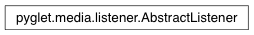

AbstractListener Class¶
-
class
AbstractListener¶ The listener properties for positional audio.
You can obtain the singleton instance of this class by calling AbstractAudioDriver.get_listener.
Attributes:
forward_orientationA vector giving the direction the listener is facing. positionThe position of the listener in 3D space. up_orientationA vector giving the “up” orientation of the listener. volumeThe master volume for sound playback.
Attributes¶
-
AbstractListener.forward_orientation¶ A vector giving the direction the listener is facing.
The orientation is given as a tuple of floats (x, y, z), and has no unit. The forward orientation should be orthagonal to the up orientation.
Type: 3-tuple of float
-
AbstractListener.position¶ The position of the listener in 3D space.
The position is given as a tuple of floats (x, y, z). The unit defaults to meters, but can be modified with the listener properties.
Type: 3-tuple of float
-
AbstractListener.up_orientation¶ A vector giving the “up” orientation of the listener.
The orientation is given as a tuple of floats (x, y, z), and has no unit. The up orientation should be orthagonal to the forward orientation.
Type: 3-tuple of float
-
AbstractListener.volume¶ The master volume for sound playback.
All sound volumes are multiplied by this master volume before being played. A value of 0 will silence playback (but still consume resources). The nominal volume is 1.0.
Type: float